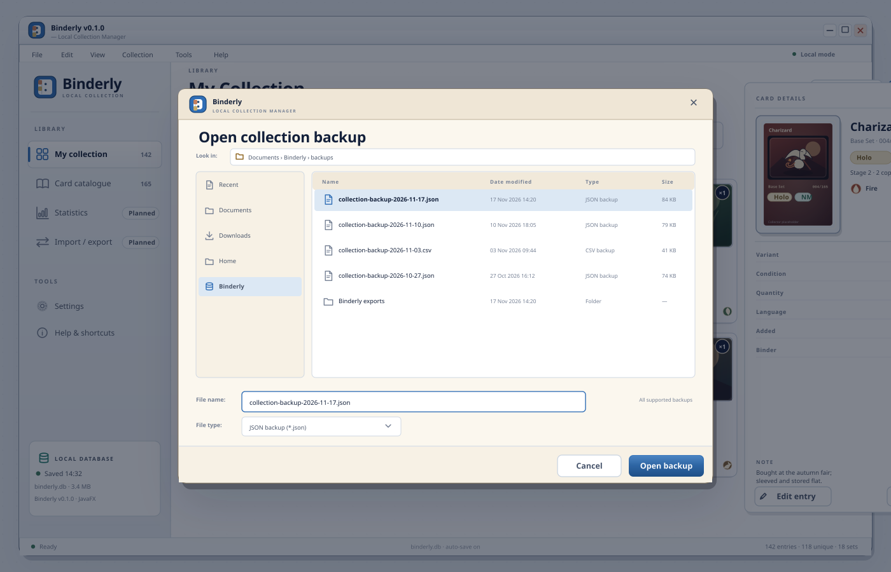
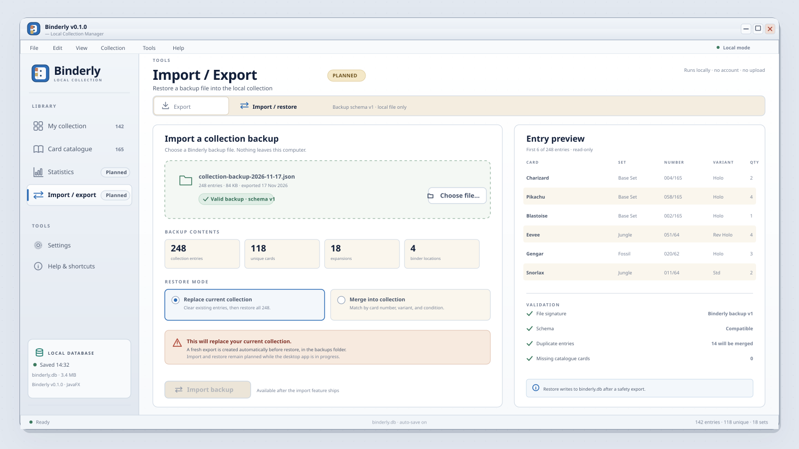

Rule 01
Export your existing collection first
If the collection in Binderly matters to you, export it before you import. That export is the straightforward way back if the imported file turns out to be the wrong one.
Guide 5 of 5
An export creates a file you keep. An import puts the collection stored in one of those files back into Binderly. This guide walks through both, one step at a time, and shows where the irreversible part of an import begins.
Import & export is a planned feature in the project plan. It may change before release, and it is not confirmed for the current version of the app. Treat the steps below as the intended design, not as a description of buttons you can press today.
Because the first public release is still unpublished, there is nothing to download and no backup you can create in Binderly yet. When a release exists, the Download page will be the place to check what it includes.
Two actions, two different outcomes
Export copies your collection out. Import writes a backup back in. Only one of them touches the collection you already have.
Binderly reads the collection on screen and writes it to one file you choose. Nothing in the app changes — the export is an extra copy, not a move.
Result: one file you can store or copy anywhere.
Binderly reads a backup and, after you confirm, swaps the current collection for the one in the file. Entries that are not in the backup are not kept alongside it.
Result: the file's collection becomes your collection.
Rule of thumb: export before you import. The export you make first is the way back.
Copy out · nothing in the app changes
An export turns the collection you are viewing into one file you can keep. Nothing in Binderly changes when you export — the file is an extra copy, not a move.
Start in Binderly with the collection you want to copy. Open My collection, then the Import / export screen from the app navigation. Check that the collection on screen is the one you mean to back up before you continue.
Where to find it
The screen lists both actions: Export collection and Import a collection backup.
Choose Export collection. Binderly gathers the entries in your collection — card, variant, condition, and quantity — and prepares them for a single backup file. No file has been written yet.

Continuing opens the save dialog provided by your operating system, not a window drawn by Binderly. It may look different on your computer, but it works like any other Save dialog you have used.
Pick a folder you will remember, such as Documents or a dedicated Binderly folder. The placeholder dialog shows Documents › Binderly as an example, not as a required location. A backup is only useful if you can find it again.
Example folder path
Any folder you will remember works. A backup you cannot find is not a backup.
The dialog may suggest a name such as collection-backup-2026-11-17.json. Keep it or write your own. A date in the name tells you when the backup was made. Keep the file type the dialog offers; changing the extension can make the file harder to recognise later.
Reading the suggested name
collection-backup-2026-11-17.json
Choose the save button in the dialog. Binderly should then write the file and show a confirmation. If you cancel the dialog instead, no file is created and your collection stays exactly as it is.
What your choice does
Open the folder you chose and check that the file is there. Note the path, or copy the file to a second place. If it is missing, look in the folder you selected in step four before exporting again.
Backup check
Missing? Re-check the folder from step four before exporting again.
What the backup carries
A backup is not a screenshot of your collection. It is data that a later import can restore from.
Which cards you own, so every entry can be found again.
A holo copy and a standard copy stay separate entries.
The recorded state of each copy survives the round trip.
Five copies remain five copies.
Enough information to display each entry again without guessing.
The file dialogs on this page show a JSON file as an illustration. The backup is not meant to be opened and edited by hand.
Write in · replaces after confirmation
An import reads a backup file and puts that collection back into Binderly. This is the half that changes your data, so the steps below are careful about the confirmation.
Open the Import / export screen and choose Import a collection backup. The import begins inside Binderly; you do not need to double-click the backup file in your file manager.
Choose the import action
Starting from inside Binderly is the intended route. The backup file does not need to be opened directly.
Choose the button that opens a file picker, then find a backup you exported earlier. This is your operating system's open dialog, so it may look different from the placeholder below. If it offers a file type filter, choose the Binderly backup type.

Before changing anything, Binderly reads the file and shows what it found. Check the filename and export date against the backup you meant to use. Wrong file, wrong collection — this is the point to stop.
The summary should show
Wrong filename or wrong date? Stop here — nothing has been changed yet.
The summary should say how many collection entries the backup holds, and may also show how many physical cards those entries represent. The placeholder uses 248 entries and 312 physical cards as an example. A count that looks wrong is a reason to cancel.

The confirmation should state plainly that your current collection will be replaced by the collection in the file. If you have not exported your existing collection yet, cancel and do that first.

Choose the replace button only after reading the warning. If you cancel or close the dialog, nothing is imported and the current collection remains as it was.
Two buttons, two outcomes
Read the warning first. The replace button is the irreversible part.
Binderly should return to the collection view, now showing the entries from the backup. Open a few entries and check their variants, conditions, and quantities. If something looks wrong, the export you made before importing is the way back.
Spot-check after import
Something wrong? Import the backup you exported before this one.
Pre-import check
Any “no” is a reason to cancel. Cancelling leaves the current collection unchanged.
Read before you import
One rule matters more than the rest. The four below it are how you stay safe around it.
The one rule
After you confirm, the collection in Binderly is intended to be replaced by the collection in the backup. Entries that are not in the file are not kept alongside it.
No in-app undo. The export you make first is the way back.
Rule 01
If the collection in Binderly matters to you, export it before you import. That export is the straightforward way back if the imported file turns out to be the wrong one.
Rule 02
If the file is not a valid Binderly backup, the import should stop and leave the current collection untouched. A failed import is not a reason to assume your collection was changed, but check it before trying again.
Rule 03
Closing the confirmation, or cancelling the file picker, should leave the existing collection exactly as it was. Cancelling an import is safe.
Rule 04
Merging is planned but not guaranteed. Do not plan on an import combining two collections; plan on it replacing one with the other.
A backup file is boring right up to the moment it is the only copy of your collection.
Cards get moved, a binder gets rearranged, or a session ends unexpectedly. A backup holds the record you had when you exported it, so a mistake can be repaired by importing that record again.
If you later use Binderly on another computer, a backup is the intended way to carry the collection across. The supported systems for the first release are not confirmed yet, so check the Download page before planning a move.
Store the file somewhere that is not the only copy of anything — an external drive, or a folder your normal backups already include. One extra copy turns a lost collection into an afternoon's work instead of a permanent loss.
Short answers, limited to what the project plan describes.
Importing is planned to replace the current collection after you confirm. Merging is listed as a planned feature and is not guaranteed in the current plan, so do not rely on an import to combine collections. Export the current collection first if you want to keep it.
Cancelling the file picker or the replacement confirmation should leave your existing collection exactly as it was. Nothing is imported until you confirm, so cancelling is the safe choice when you are unsure.
A backup is intended to be restored by Binderly, not browsed as a document. The file is not promised to be readable or useful in other software, and this guide does not treat it as an editable list of cards. The file dialogs on this page show JSON as an illustration of a file type, not as a promise about what you will find inside.